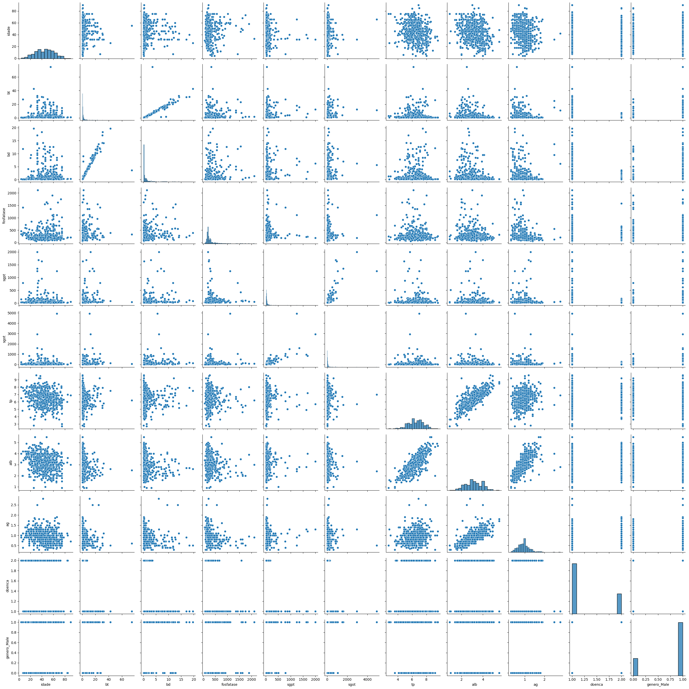
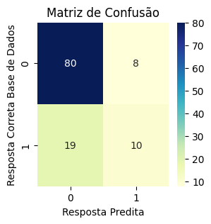
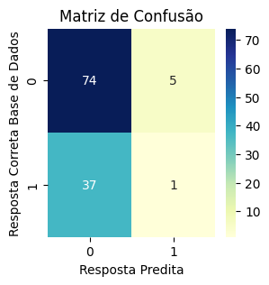
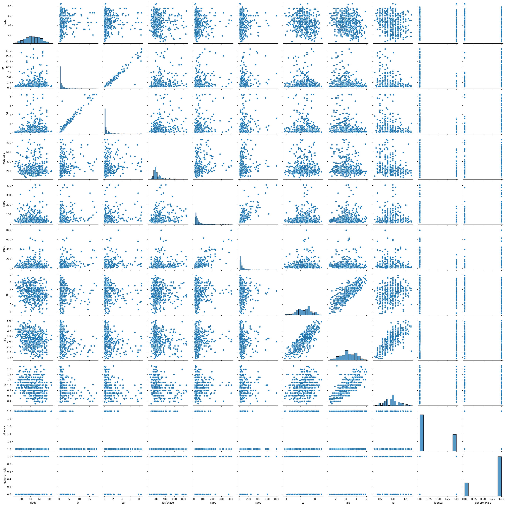
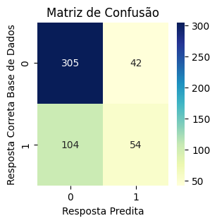
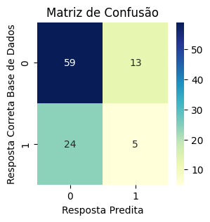

Autor : Ricardo R Lângaro.
Banco utilizado: Detecção de doenças no fígado.
https://www.kaggle.com/datasets/uciml/indian-liver-patient-records
Descrição do banco:
Este banco contém registro de 416 pacientes diagnosticados com doença no fígado e 167 pacientes sem. Esta informação está na coluna Selector.
Há 10 variáveis no banco:
- age: idade
- Gender: gênero do paciente
- TB: Bilirrubina total
- DB: Bilirrubina direta
- Alkphos: fosfatase alcalina.
- Sgpt: transaminase glutâmico-pirúvica sérica (TGP)
- Sgot: transaminase glutâmico-oxalacética sérica (TGO)
- TP: Proteína total
- ALB: Albumina
- A/G Ratio: Relação Albumina:Globulina
Objetivo : Tomando como decisão o f1 score e precisão, decidiremos qual modelo logístico ou de árvore melhor se adequa ao problema de pacientes com doença no fígado. Qual é o melhor modelo?
import numpy as np
import pandas as pd
import matplotlib.pyplot as plt
dataframe = pd.read_csv('IndianLiverPatientDataset.csv')dataframe.head(5)| Age | Gender | TB | DB | Alkphos | Sgpt | Sgot | TP | ALB | A/G Ratio | Selector | |
|---|---|---|---|---|---|---|---|---|---|---|---|
| 0 | 65 | Female | 0.7 | 0.1 | 187 | 16 | 18 | 6.8 | 3.3 | 0.90 | 1 |
| 1 | 62 | Male | 10.9 | 5.5 | 699 | 64 | 100 | 7.5 | 3.2 | 0.74 | 1 |
| 2 | 62 | Male | 7.3 | 4.1 | 490 | 60 | 68 | 7.0 | 3.3 | 0.89 | 1 |
| 3 | 58 | Male | 1.0 | 0.4 | 182 | 14 | 20 | 6.8 | 3.4 | 1.00 | 1 |
| 4 | 72 | Male | 3.9 | 2.0 | 195 | 27 | 59 | 7.3 | 2.4 | 0.40 | 1 |
renomeando as colunas
dataframe =dataframe.rename(columns={'Age': 'idade','Gender': 'genero',
'TB': 'bt','DB': 'bd','Alkphos': 'fosfatase',
'Sgpt': 'sgpt','Sgot': 'sgot','TP': 'tp',
'ALB': 'alb','A/G Ratio': 'ag','Selector': 'doenca'});
dataframe.head(5)| idade | genero | bt | bd | fosfatase | sgpt | sgot | tp | alb | ag | doenca | |
|---|---|---|---|---|---|---|---|---|---|---|---|
| 0 | 65 | Female | 0.7 | 0.1 | 187 | 16 | 18 | 6.8 | 3.3 | 0.90 | 1 |
| 1 | 62 | Male | 10.9 | 5.5 | 699 | 64 | 100 | 7.5 | 3.2 | 0.74 | 1 |
| 2 | 62 | Male | 7.3 | 4.1 | 490 | 60 | 68 | 7.0 | 3.3 | 0.89 | 1 |
| 3 | 58 | Male | 1.0 | 0.4 | 182 | 14 | 20 | 6.8 | 3.4 | 1.00 | 1 |
| 4 | 72 | Male | 3.9 | 2.0 | 195 | 27 | 59 | 7.3 | 2.4 | 0.40 | 1 |
tratando os valores nulos primeiro
dataframe.isnull().sum()idade 0
genero 0
bt 0
bd 0
fosfatase 0
sgpt 0
sgot 0
tp 0
alb 0
ag 4
doenca 0
dtype: int64pela pequena quantidade sera tratado pela mediana
dataframe['ag'].fillna(dataframe['ag'].median(), inplace = True) # inplace substitui o registrodataframe_dummy = pd.get_dummies(dataframe, drop_first=True)
dataframe_dummy.head(5)| idade | bt | bd | fosfatase | sgpt | sgot | tp | alb | ag | doenca | genero_Male | |
|---|---|---|---|---|---|---|---|---|---|---|---|
| 0 | 65 | 0.7 | 0.1 | 187 | 16 | 18 | 6.8 | 3.3 | 0.90 | 1 | 0 |
| 1 | 62 | 10.9 | 5.5 | 699 | 64 | 100 | 7.5 | 3.2 | 0.74 | 1 | 1 |
| 2 | 62 | 7.3 | 4.1 | 490 | 60 | 68 | 7.0 | 3.3 | 0.89 | 1 | 1 |
| 3 | 58 | 1.0 | 0.4 | 182 | 14 | 20 | 6.8 | 3.4 | 1.00 | 1 | 1 |
| 4 | 72 | 3.9 | 2.0 | 195 | 27 | 59 | 7.3 | 2.4 | 0.40 | 1 | 1 |
Descobrindo qual numero 1, 2 classifica os sadios na classe 'doenca'.
sum(dataframe_dummy['doenca'] == 2 )167dataframe_dummy.describe()| idade | bt | bd | fosfatase | sgpt | sgot | tp | alb | ag | doenca | genero_Male | |
|---|---|---|---|---|---|---|---|---|---|---|---|
| count | 583.000000 | 583.000000 | 583.000000 | 583.000000 | 583.000000 | 583.000000 | 583.000000 | 583.000000 | 583.000000 | 583.000000 | 583.000000 |
| mean | 44.746141 | 3.298799 | 1.486106 | 290.576329 | 80.713551 | 109.910806 | 6.483190 | 3.141852 | 0.946947 | 1.286449 | 0.756432 |
| std | 16.189833 | 6.209522 | 2.808498 | 242.937989 | 182.620356 | 288.918529 | 1.085451 | 0.795519 | 0.318495 | 0.452490 | 0.429603 |
| min | 4.000000 | 0.400000 | 0.100000 | 63.000000 | 10.000000 | 10.000000 | 2.700000 | 0.900000 | 0.300000 | 1.000000 | 0.000000 |
| 25% | 33.000000 | 0.800000 | 0.200000 | 175.500000 | 23.000000 | 25.000000 | 5.800000 | 2.600000 | 0.700000 | 1.000000 | 1.000000 |
| 50% | 45.000000 | 1.000000 | 0.300000 | 208.000000 | 35.000000 | 42.000000 | 6.600000 | 3.100000 | 0.930000 | 1.000000 | 1.000000 |
| 75% | 58.000000 | 2.600000 | 1.300000 | 298.000000 | 60.500000 | 87.000000 | 7.200000 | 3.800000 | 1.100000 | 2.000000 | 1.000000 |
| max | 90.000000 | 75.000000 | 19.700000 | 2110.000000 | 2000.000000 | 4929.000000 | 9.600000 | 5.500000 | 2.800000 | 2.000000 | 1.000000 |
import seaborn as sns
plt.figure(figsize=(10,5))
sns.pairplot(dataframe_dummy)
plt.tight_layout()
plt.show()<Figure size 1000x500 with 0 Axes>
Aqui detectamos algumas colunas estritamentes lineares, como
bd X bt;
sgot X sgpt;
alb X tp;
alb X ag
Utilizamos um modelo de regressão logistica para classificar os com doenças hepaticas. Primeiro separamos a base treino e base teste , sendo teste 20% da base.
from sklearn.model_selection import train_test_split
X_train, X_test, Y_train, Y_test = train_test_split( dataframe_dummy.drop('doenca',axis=1), dataframe_dummy['doenca'],
test_size=.20, random_state=15)
print(len(X_train),
len(Y_train),
len(X_test),
len(Y_test))466 466 117 117
from sklearn.linear_model import LogisticRegression
model1 = LogisticRegression(penalty=None, solver='lbfgs', max_iter=3000 )
model1.fit(X_train, Y_train)
# matriz de confusão do primeiro modelo
from sklearn import metrics
cnf_matrix = metrics.confusion_matrix(Y_test, model1.predict(X_test) )
import seaborn as sns
fig, ax = plt.subplots(figsize=(3,3)) #Tamanho do plot
sns.heatmap( cnf_matrix, annot=True, cmap="YlGnBu" ,fmt='g')
plt.title('Matriz de Confusão')
plt.ylabel('Resposta Correta Base de Dados')
plt.xlabel('Resposta Predita')Text(0.5, 3.722222222222216, 'Resposta Predita')
from sklearn.metrics import classification_report
print(classification_report(Y_test, model1.predict(X_test), target_names=['Com doença Hepatica 0','Sem doença Hepatica 1'])) precision recall f1-score support
Com doença Hepatica 0 0.81 0.91 0.86 88
Sem doença Hepatica 1 0.56 0.34 0.43 29
accuracy 0.77 117
macro avg 0.68 0.63 0.64 117
weighted avg 0.75 0.77 0.75 117
Aqui observamos que o modelo ficou com valores bons, acima de 0,80.
support : é a soma total do grupo.
Precisão: avalia a quantidade de verdadeiros positivos sobre a soma de todos os valores positivos. 80/(80+19)
Recall ou Sensibilidade: avalia a capacidade do método de detectar com sucesso resultados classificados como positivos sobre os Falsos Negativos. 80/(80+8)
Este modelo classifica mais Falso negativo (19) do que Falso Positivo (8), ou seja erra para menos, classificando que menos pessoas têm doença hepatica que a realidade.
Para termos uma melhor noção do treinamento utilizaremos a validação cruzada e retreinaremos o modelo. Na validação cruzada, o dataset é dividido aleatoriamente em varios grupos, o modelo é treinado com esses vários grupos separadamente e depois avaliados separadamente. Por fim, usamos a média das métricas para o modelo. Essa técnica ajuda a evitar a influência da divisão dos dados na métrica.
from sklearn.model_selection import cross_val_score
result = cross_val_score( model1, dataframe_dummy.drop('doenca',axis=1), dataframe_dummy['doenca'], cv=10, scoring='f1')
# cross validation, aqui dividimos o dataset em n grupos e usamos a metrica de f1-score
print("Pontuação dos 5 testes: {0}".format(result))
print("Média do Cross-Validation : {0}".format(result.mean()))Pontuação dos 5 testes: [0.82105263 0.80851064 0.82978723 0.82222222 0.83516484 0.82352941
0.7816092 0.83516484 0.8125 0.86021505]
Média do Cross-Validation : 0.8229756057401711
Aqui observamos que o modelo ficou bom com a métrica F1, que pondera os falso negativo com o falso negativo.
from sklearn.model_selection import train_test_split
X_train, X_test, Y_train, Y_test = train_test_split( dataframe_dummy.drop('doenca',axis=1), dataframe_dummy['doenca'],
test_size=.20, random_state=55)
print(len(X_train),
len(Y_train),
len(X_test),
len(Y_test))466 466 117 117
Aqui escolhemos uma árvore que quebra seus ramos em até 4 níveis de profundidade, isso resultaria em 4^2 = 16 folhas, ou grupos.
from sklearn.tree import DecisionTreeClassifier
model2 = DecisionTreeClassifier( max_depth = 4 )
model2.fit(X_train, Y_train)
# matriz de confusão do primeiro modelo
from sklearn import metrics
cnf_matrix = metrics.confusion_matrix(Y_test, model2.predict(X_test) )
import seaborn as sns
fig, ax = plt.subplots(figsize=(3,3)) #Tamanho do plot
sns.heatmap( cnf_matrix, annot=True, cmap="YlGnBu" ,fmt='g')
plt.title('Matriz de Confusão')
plt.ylabel('Resposta Correta Base de Dados')
plt.xlabel('Resposta Predita')Text(0.5, 3.722222222222216, 'Resposta Predita')
model2.get_n_leaves() # Retorne o número de folhas da árvore de decisão.13Percebemos que a árvore não utilizou todas a profundidade dada.
from sklearn.metrics import classification_report
print(classification_report(Y_test, model2.predict(X_test), target_names=['Com doença Hepatica 0','Sem doença Hepatica 1'])) precision recall f1-score support
Com doença Hepatica 0 0.67 0.94 0.78 79
Sem doença Hepatica 1 0.17 0.03 0.05 38
accuracy 0.64 117
macro avg 0.42 0.48 0.41 117
weighted avg 0.50 0.64 0.54 117
Aqui observamos que a precisão foi afetada negativamente em relação a reg. logistica.
Aqui erramos 37 pessoas classificando com a doença quando na verdade nao estavam. Tambem erramos 5 pessoas dizendo estar saldáveis quando não estavam.
support : é a soma total do grupo
Precisão: avalia a quantidade de verdadeiros positivos sobre a soma de todos os valores positivos. 74/(74+37)
Recall ou Sensibilidade: avalia a capacidade do método de detectar com sucesso resultados classificados como positivos sobre os Falsos Negativos. 74/(74+5)
Este modelo classifica mais Falso negativo (19) do que Falso Positivo (8), ou seja erra para menos, classificando que menos pessoas têm doença hepatica que a realidade.
from sklearn.model_selection import cross_val_score
result = cross_val_score( model2, dataframe_dummy.drop('doenca',axis=1), dataframe_dummy['doenca'], cv=10, scoring='f1')
# cross validation, aqui dividimos o dataset em n grupos e usamos a metrica de f1-score
print("Pontuação dos 5 testes: {0}".format(result))
print("Média do Cross-Validation : {0}".format(result.mean()))Pontuação dos 5 testes: [0.73417722 0.77272727 0.82474227 0.8172043 0.79120879 0.80434783
0.82828283 0.7826087 0.77777778 0.82474227]
Média do Cross-Validation : 0.7957819244083416
Comparada a reg. logistica vemos que a classificação por árvore ficou pior na métrica geral de F1.
Também podemos aplicar um pequeno filtro para tirar os outliers. Calculamos a pontuação z de cada valor na amostra, em relação a média da amostra e desvio padrão, e então filtramos-os. Reavaliamos os modelos e vemos sua intereferência e qualidade.
from scipy import stats
z0 = np.abs(stats.zscore(dataframe_dummy['idade']))
z1 = np.abs(stats.zscore(dataframe_dummy['bt']))
z2 = np.abs(stats.zscore(dataframe_dummy['bd']))
z3 = np.abs(stats.zscore(dataframe_dummy['fosfatase']))
z4 = np.abs(stats.zscore(dataframe_dummy['sgpt']))
z5 = np.abs(stats.zscore(dataframe_dummy['sgot']))
z6 = np.abs(stats.zscore(dataframe_dummy['tp']))
z7 = np.abs(stats.zscore(dataframe_dummy['alb']))
z8 = np.abs(stats.zscore(dataframe_dummy['ag']))
threshold = 2.5
# indice do outlier filtrado
indices_z0=np.where(z0 > threshold)[0]
indices_z1=np.where(z1 > threshold)[0]
indices_z2=np.where(z2 > threshold)[0]
indices_z3=np.where(z3 > threshold)[0]
indices_z4=np.where(z4 > threshold)[0]
indices_z5=np.where(z5 > threshold)[0]
indices_z6=np.where(z6 > threshold)[0]
indices_z7=np.where(z7 > threshold)[0]
indices_z8=np.where(z8 > threshold)[0]
indices = np.concatenate((indices_z0, indices_z1, indices_z2, indices_z3,indices_z4, indices_z5, indices_z6, indices_z7, indices_z8))
# Selecionando as linhas filtradas usando iloc
dataframe_filtrado = dataframe_dummy.iloc[dataframe_dummy.index.difference(indices)]
dataframe_filtrado| idade | bt | bd | fosfatase | sgpt | sgot | tp | alb | ag | doenca | genero_Male | |
|---|---|---|---|---|---|---|---|---|---|---|---|
| 0 | 65 | 0.7 | 0.1 | 187 | 16 | 18 | 6.8 | 3.3 | 0.90 | 1 | 0 |
| 1 | 62 | 10.9 | 5.5 | 699 | 64 | 100 | 7.5 | 3.2 | 0.74 | 1 | 1 |
| 2 | 62 | 7.3 | 4.1 | 490 | 60 | 68 | 7.0 | 3.3 | 0.89 | 1 | 1 |
| 3 | 58 | 1.0 | 0.4 | 182 | 14 | 20 | 6.8 | 3.4 | 1.00 | 1 | 1 |
| 4 | 72 | 3.9 | 2.0 | 195 | 27 | 59 | 7.3 | 2.4 | 0.40 | 1 | 1 |
| ... | ... | ... | ... | ... | ... | ... | ... | ... | ... | ... | ... |
| 578 | 60 | 0.5 | 0.1 | 500 | 20 | 34 | 5.9 | 1.6 | 0.37 | 2 | 1 |
| 579 | 40 | 0.6 | 0.1 | 98 | 35 | 31 | 6.0 | 3.2 | 1.10 | 1 | 1 |
| 580 | 52 | 0.8 | 0.2 | 245 | 48 | 49 | 6.4 | 3.2 | 1.00 | 1 | 1 |
| 581 | 31 | 1.3 | 0.5 | 184 | 29 | 32 | 6.8 | 3.4 | 1.00 | 1 | 1 |
| 582 | 38 | 1.0 | 0.3 | 216 | 21 | 24 | 7.3 | 4.4 | 1.50 | 2 | 1 |
505 rows × 11 columns
print('Número de outliers filtrados : ', len(remove_dups(indices)) , ',Indices : ', remove_dups(indices))Número de outliers filtrados : 78 ,Indices : [519, 531, 533, 535, 24, 25, 26, 27, 546, 547, 548, 559, 47, 49, 565, 571, 572, 575, 77, 80, 90, 92, 97, 100, 115, 116, 117, 118, 119, 120, 121, 128, 135, 161, 166, 168, 169, 177, 180, 181, 195, 199, 207, 215, 233, 238, 243, 246, 256, 259, 260, 265, 267, 269, 270, 271, 272, 273, 311, 370, 372, 410, 415, 419, 420, 429, 447, 452, 458, 478, 479, 491, 503, 504, 505, 506, 509, 510]
def remove_dups(lista):
"""Remove os itens duplicados mas não mantém a ordem original."""
return list(set(lista))
print('Número de outliers filtrados : ', len(remove_dups(indices)) , ',Indices : ', remove_dups(indices))
print('Número de outliers filtrados : ',len(dataframe) - len(dataframe_filtrado), ',Percentual de outliers : ', int((len(dataframe) - len(dataframe_filtrado))/len(dataframe)*100),'%')Número de outliers filtrados : 78 ,Indices : [519, 531, 533, 535, 24, 25, 26, 27, 546, 547, 548, 559, 47, 49, 565, 571, 572, 575, 77, 80, 90, 92, 97, 100, 115, 116, 117, 118, 119, 120, 121, 128, 135, 161, 166, 168, 169, 177, 180, 181, 195, 199, 207, 215, 233, 238, 243, 246, 256, 259, 260, 265, 267, 269, 270, 271, 272, 273, 311, 370, 372, 410, 415, 419, 420, 429, 447, 452, 458, 478, 479, 491, 503, 504, 505, 506, 509, 510]
Número de outliers filtrados : 78 ,Percentual de outliers : 13 %
Faremosuma segunda base de validação com os dados eliminados do treinamento.
dataframe_eliminados = dataframe_dummy.iloc[remove_dups(indices)]plt.figure(figsize=(10,5))
sns.pairplot(dataframe_filtrado)
plt.tight_layout()
plt.show()<Figure size 1000x500 with 0 Axes>
Utilizamos um modelo de regressão logistica para classificar os com doenças hepaticas. Primeiro separamos a base treino e base teste , sendo teste 20% da base.
from sklearn.model_selection import train_test_split
X_train, X_test, Y_train, Y_test = train_test_split( dataframe_filtrado.drop('doenca',axis=1), dataframe_filtrado['doenca'],
test_size=.20, random_state=15)
print(len(X_train),
len(Y_train),
len(X_test),
len(Y_test))404 404 101 101
from sklearn.linear_model import LogisticRegression
model3 = LogisticRegression(penalty=None, solver='lbfgs', max_iter=3000 )
model3.fit(X_train, Y_train)
# matriz de confusão do primeiro modelo
from sklearn import metrics
cnf_matrix = metrics.confusion_matrix(dataframe_filtrado['doenca'], model3.predict(dataframe_filtrado.drop('doenca',axis=1)) )
import seaborn as sns
fig, ax = plt.subplots(figsize=(3,3)) #Tamanho do plot
sns.heatmap( cnf_matrix, annot=True, cmap="YlGnBu" ,fmt='g')
plt.title('Matriz de Confusão')
plt.ylabel('Resposta Correta Base de Dados')
plt.xlabel('Resposta Predita')Text(0.5, 3.722222222222216, 'Resposta Predita')
from sklearn.metrics import classification_report
print(classification_report(Y_test, model3.predict(X_test), target_names=['Com doença Hepatica 0','Sem doença Hepatica 1'])) precision recall f1-score support
Com doença Hepatica 0 0.84 0.88 0.86 76
Sem doença Hepatica 1 0.57 0.48 0.52 25
accuracy 0.78 101
macro avg 0.70 0.68 0.69 101
weighted avg 0.77 0.78 0.78 101
Aqui observamos que o modelo ficou um pouco melhor que o primeiro logistico sme filtros
Temos na Pecisão um valor medio 0,7 em relação ao anterior de 0,68.
Temos um recall a sensibilidade dos valores positivos como 0,68 um pouco melhor que o primeiro logistico de 0,64.
Para termos uma melhor noção do treinamento utilizaremos a validação cruzada e retreinaremos o modelo. Na validação cruzada, o dataset é dividido aleatoriamente em varios grupos, o modelo é treinado com esses vários grupos separadamente e depois avaliados separadamente. Por fim, usamos a média das métricas para o modelo. Essa técnica ajuda a evitar a influência da divisão dos dados na métrica.
from sklearn.model_selection import cross_val_score
result = cross_val_score( model3, dataframe_filtrado.drop('doenca',axis=1), dataframe_filtrado['doenca'], cv=10, scoring='f1')
# cross validation, aqui dividimos o dataset em n grupos e usamos a metrica de f1-score
print("Pontuação dos 5 testes: {0}".format(result))
print("Média do Cross-Validation : {0}".format(result.mean()))Pontuação dos 5 testes: [0.76923077 0.81481481 0.82926829 0.825 0.84210526 0.78378378
0.75 0.73972603 0.8 0.83116883]
Média do Cross-Validation : 0.7985097782236281
Aqui observamos que o modelo ficou relativamente bom usando a metrica F1, mas pior que o primeiro logistico sem filtros.
from sklearn.model_selection import train_test_split
X_train, X_test, Y_train, Y_test = train_test_split( dataframe_filtrado.drop('doenca',axis=1), dataframe_filtrado['doenca'],
test_size=.20, random_state=55)
print(len(X_train),
len(Y_train),
len(X_test),
len(Y_test))404 404 101 101
Aqui escolhemos uma árvore que quebra seus ramos em até 4 níveis de profundidade, isso resultaria em 4^2 = 16 folhas, ou grupos.
from sklearn.tree import DecisionTreeClassifier
model4 = DecisionTreeClassifier( max_depth = 4 )
model4.fit(X_train, Y_train)
# matriz de confusão do primeiro modelo
from sklearn import metrics
cnf_matrix = metrics.confusion_matrix(Y_test, model4.predict(X_test) )
import seaborn as sns
fig, ax = plt.subplots(figsize=(3,3)) #Tamanho do plot
sns.heatmap( cnf_matrix, annot=True, cmap="YlGnBu" ,fmt='g')
plt.title('Matriz de Confusão')
plt.ylabel('Resposta Correta Base de Dados')
plt.xlabel('Resposta Predita')Text(0.5, 3.722222222222216, 'Resposta Predita')
model2.get_n_leaves() # Retorne o número de folhas da árvore de decisão.13Percebemos que a árvore não utilizou todas a profundidade dada.
from sklearn.metrics import classification_report
print(classification_report(Y_test, model4.predict(X_test), target_names=['Com doença Hepatica 0','Sem doença Hepatica 1'])) precision recall f1-score support
Com doença Hepatica 0 0.71 0.82 0.76 72
Sem doença Hepatica 1 0.28 0.17 0.21 29
accuracy 0.63 101
macro avg 0.49 0.50 0.49 101
weighted avg 0.59 0.63 0.60 101
from sklearn.model_selection import cross_val_score
result = cross_val_score( model4, dataframe_filtrado.drop('doenca',axis=1), dataframe_filtrado['doenca'], cv=10, scoring='f1')
# cross validation, aqui dividimos o dataset em n grupos e usamos a metrica de f1-score
print("Pontuação dos 5 testes: {0}".format(result))
print("Média do Cross-Validation : {0}".format(result.mean()))Pontuação dos 5 testes: [0.73529412 0.71232877 0.8 0.81012658 0.61818182 0.77922078
0.84337349 0.71428571 0.73684211 0.75949367]
Média do Cross-Validation : 0.7509147048862277
Aqui observamos que o modelo ficou relativamente bom usando a metrica F1, mas pior que a primeira árvore e o primeiro logistico sem filtros. Ou seja, o pior na métrica F1.
from sklearn.model_selection import cross_val_score
result = cross_val_score( model3, dataframe_eliminados.drop('doenca',axis=1), dataframe_eliminados['doenca'], cv=10, scoring='f1')
# cross validation, aqui dividimos o dataset em n grupos e usamos a metrica de f1-score
print("Pontuação dos n testes: {0}".format(result))
print("Média do Cross-Validation : {0}".format(result.mean()))
print("\n\n")
result = cross_val_score( model4, dataframe_eliminados.drop('doenca',axis=1), dataframe_eliminados['doenca'], cv=10, scoring='f1')
# cross validation, aqui dividimos o dataset em n grupos e usamos a metrica de f1-score
print("Pontuação dos n testes: {0}".format(result))
print("Média do Cross-Validation : {0}".format(result.mean()))/usr/local/lib/python3.10/dist-packages/sklearn/model_selection/_split.py:700: UserWarning: The least populated class in y has only 9 members, which is less than n_splits=10.
warnings.warn(
Pontuação dos n testes: [0.93333333 0.93333333 0.93333333 0.93333333 0.85714286 0.92307692
0.83333333 0.83333333 1. 0.92307692]
Média do Cross-Validation : 0.9103296703296703
Pontuação dos n testes: [1. 0.93333333 0.93333333 0.93333333 0.93333333 0.93333333
0.83333333 0.85714286 0.83333333 0.92307692]
Média do Cross-Validation : 0.9113553113553113
/usr/local/lib/python3.10/dist-packages/sklearn/model_selection/_split.py:700: UserWarning: The least populated class in y has only 9 members, which is less than n_splits=10.
warnings.warn(
Aqui vemos que embora os modelos sem filtro tenham uma média de F1-Score menores que os anteriores, eles são maiores com a dados de outliers eliminados enquanto compomos o filtro. A média F1 geral ficou em um intevalor > 0,91, bem significativo.
pd.DataFrame(model3.coef_.T, index=X_train.columns)| 0 | |
|---|---|
| idade | -0.020252 |
| bt | 0.334690 |
| bd | -1.065220 |
| fosfatase | -0.001158 |
| sgpt | -0.011329 |
| sgot | -0.005536 |
| tp | -1.267314 |
| alb | 2.463634 |
| ag | -3.389987 |
| genero_Male | -0.007762 |
As relações mais importantes aqui ,segunda a regressão logistica são em valores absolutos: ag seguido alb.
Combinadas com outras deixam o modelo ainda mais significativo.
O modelo logístico é mais adequado para classificar classes boleanas. Assim o modelo 1 de regressão logística sem filtro ficou com a maior F1 score após a validação cruzada.
O modelo logístico é mais adequado para classificar classes boleanas. Assim o modelo 3 de regressão logística filtrado ficou com a maior precisão entre todos.
Autor : Ricardo R Lângaro.